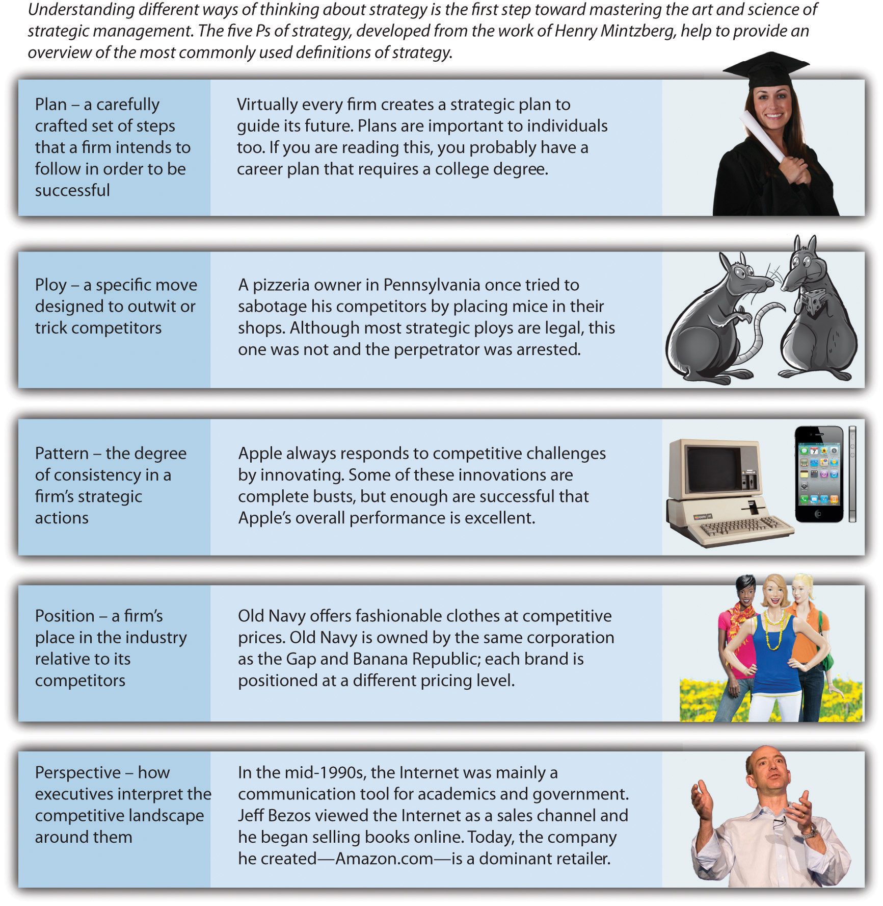
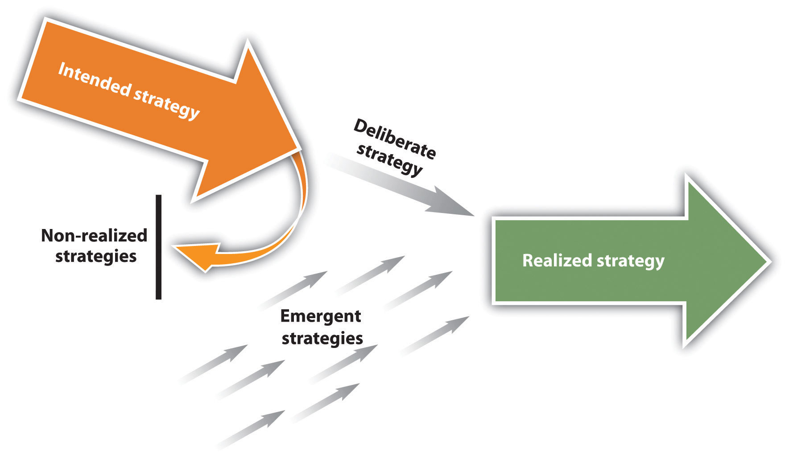

After reading this chapter, you should be able to understand and articulate answers to the following questions:
The Opening of the Apple Store
Image courtesy of Neil Bird, http://www.flickr.com/photos/nechbi/2058929337.
March 2, 2011, was a huge day for Apple. The firm released its much-anticipated iPad2, a thinner and faster version of market-leading Apple’s iPad tablet device. Apple also announced that a leading publisher, Random House, had made all seventeen thousand of its books available through Apple’s iBookstore. Apple had enjoyed tremendous success for quite some time. Approximately fifteen million iPads were sold in 2010, and the price of Apple’s stock had more than tripled from early 2009 to early 2011.
But future success was far from guaranteed. The firm’s visionary founder Steve Jobs was battling serious health problems. Apple’s performance had suffered when an earlier health crisis had forced Jobs to step away from the company. This raised serious questions. Would Jobs have to step away again? If so, how might Apple maintain its excellent performance without its leader?
Meanwhile, the iPad2 faced daunting competition. Samsung, LG, Research in Motion, Dell, and other manufacturers were trying to create tablets that were cheaper, faster, and more versatile than the iPad2. These firms were eager to steal market share by selling their tablets to current and potential Apple customers. Could Apple maintain leadership of the tablet market, or would one or more of its rivals dominate the market in the years ahead? Even worse, might a company create a new type of device that would make Apple’s tablets obsolete?
Issues such as those currently faced by Apple are the focus of strategic management because they help answer the key question examined by strategic managementExamines how actions and events involving top executives (such as Steve Jobs), firms (Apple), and industries (the tablet market) influence a firm’s success or failure.—“Why do some firms outperform other firms?” More specifically, strategic management examines how actions and events involving top executives (such as Steve Jobs), firms (Apple), and industries (the tablet market) influence a firm’s success or failure. Formal tools exist for understanding these relationships, and many of these tools are explained and applied in this book. But formal tools are not enough; creativity is just as important to strategic management. Mastering strategy is therefore part art and part science.
This introductory chapter is intended to enable you to understand what strategic management is and why it is important. Because strategy is a complex concept, we begin by explaining five different ways to think about what strategy involves (Figure 1.1 "Defining Strategy: The Five Ps"). Next, we journey across many centuries to examine the evolution of strategy from ancient times until today. We end this chapter by presenting a conceptual model that maps out one way that executives can work toward mastering strategy. The model also provides an overall portrait of this book’s contents by organizing the remaining nine chapters into a coherent whole.
Defining strategy is not simple. Strategy is a complex concept that involves many different processes and activities within an organization. To capture this complexity, Professor Henry Mintzberg of McGill University in Montreal, Canada, articulated what he labeled as “the 5 Ps of strategy.” According to Mintzberg, understanding how strategy can be viewed as a plan, as a ploy, as a position, as a pattern, and as a perspective is important. Each of these five ways of thinking about strategy is necessary for understanding what strategy is, but none of them alone is sufficient to master the concept.Mintzberg, H. 1987. The strategy concept I: Five Ps for strategy. California Management Review, 30(1), 11–24.
Figure 1.1 Defining Strategy: The Five Ps
Images courtesy of Thinkstock (first); [citation redacted per publisher request] (second); Wikipedia (third); Old Navy (fourth); James Duncan Davidson from Portland, USA (fifth).
Strategic plansA carefully crafted set of steps that a firm intends to follow to be successful. are the essence of strategy, according to one classic view of strategy. A strategic plan is a carefully crafted set of steps that a firm intends to follow to be successful. Virtually every organization creates a strategic plan to guide its future. In 1996, Apple’s performance was not strong, and Gilbert F. Amelio was appointed as chief executive officer in the hope of reversing the company’s fortunes. In a speech focused on strategy, Amelio described a plan that centered on leveraging the Internet (which at the time was in its infancy) and developing multimedia products and services. Apple’s subsequent success selling over the Internet via iTunes and with the iPad can be traced back to the plan articulated in 1996.Markoff, J. 1996, May 14. Apple unveils strategic plan of small steps. New York Times. Retrieved from http://www.nytimes.com/1996/05/14/business/apple-unveils-strategic -plan-of-small-steps.html
A business modelDescribes the process through which a firm hopes to earn profits. should be a central element of a firm’s strategic plan. Simply stated, a business model describes the process through which a firm hopes to earn profits. It probably won’t surprise you to learn that developing a viable business model requires that a firm sell goods or services for more than it costs the firm to create and distribute those goods. A more subtle but equally important aspect of a business model is providing customers with a good or service more cheaply than they can create it themselves.
Consider, for example, large chains of pizza restaurants such as Papa John’s and Domino’s.
Franchises such as Pizza Hut provide an example of a popular business model that has been successful worldwide.
Image courtesy of Derek Jensen, http://wikimediafoundation.org/wiki/File:Bremen-indiana-pizza-hut.jpg.
Because these firms buy their ingredients in massive quantities, they pay far less for these items than any family could (an advantage called economies of scaleA cost advantage created when a firm can produce a good or service at a lower per unit price due to producing the good or service in large quantities.). Meanwhile, Papa John’s and Domino’s have developed specialized kitchen equipment that allows them to produce better-tasting pizza than can be created using the basic ovens that most families rely on for cooking. Pizza restaurants thus can make better-tasting pizzas for far less cost than a family can make itself. This business model provides healthy margins and has enabled Papa John’s and Domino’s to become massive firms.
Strategic plans are important to individuals too. Indeed, a well-known proverb states that “he who fails to plan, plans to fail.” In other words, being successful requires a person to lay out a path for the future and then follow that path. If you are reading this, earning a college degree is probably a key step in your strategic plan for your career. Don’t be concerned if your plan is not fully developed, however. Life is full of unexpected twists and turns, so maintaining flexibility is wise for individuals planning their career strategies as well as for firms.
For firms, these unexpected twists and turns place limits on the value of strategic planning. Former heavyweight boxing champion Mike Tyson captured the limitations of strategic plans when he noted, “Everyone has a plan until I punch them in the face.” From that point forward, strategy is less about a plan and more about adjusting to a shifting situation. For firms, changes in the behavior of competitors, customers, suppliers, regulators, and other external groups can all be sources of a metaphorical punch in the face. As events unfold around a firm, its strategic plan may reflect a competitive reality that no longer exists. Because the landscape of business changes rapidly, other ways of thinking about strategy are needed.
A second way to view strategy is in terms of ploys. A strategic ployA specific move designed to outwit or trick competitors. is a specific move designed to outwit or trick competitors. Ploys often involve using creativity to enhance success. One such case involves the mighty Mississippi River, which is a main channel for shipping cargo to the central portion of the United States. Ships traveling the river enter it near New Orleans, Louisiana. The next major port upriver is Louisiana’s capital, Baton Rouge. A variety of other important ports exist in states farther upriver.
Many decades ago, the governor of Louisiana was a clever and controversial man named Huey Long. Legend has it that Long ordered that a bridge being constructed over the Mississippi River in Baton Rouge be built intentionally low to the ground. This ploy created a captive market for cargo because very large barges simply could not fit under the bridge. Large barges using the Mississippi River thus needed to unload their cargo in either New Orleans or Baton Rouge. Either way, Louisiana would benefit. Of course, owners of ports located farther up the river were not happy.
Ploys can be especially beneficial in the face of much stronger opponents. Military history offers quite a few illustrative examples. Before the American Revolution, land battles were usually fought by two opposing armies, each of which wore brightly colored clothing, marching toward each other across open fields. George Washington and his officers knew that the United States could not possibly defeat better-trained and better-equipped British forces in a traditional battle. To overcome its weaknesses, the American military relied on ambushes, hit-and-run attacks, and other guerilla moves. It even broke an unwritten rule of war by targeting British officers during skirmishes. This was an effort to reduce the opponent’s effectiveness by removing its leadership.
Centuries earlier, the Carthaginian general Hannibal concocted perhaps the most famous ploy ever.
Hannibal’s clever use of elephants to cross the Alps provides an example of a strategic ploy.
Image courtesy of Wikipedia, http://en.wikipedia.org/wiki/File:Hannibal3.jpg.
Carthage was at war with Rome, a scary circumstance for most Carthaginians given their far weaker fighting force. The Alps had never been crossed by an army. In fact, the Alps were considered such a treacherous mountain range that the Romans did not bother monitoring the part of their territory that bordered the Alps. No horse was up to the challenge, but Hannibal cleverly put his soldiers on elephants, and his army was able to make the mountain crossing. The Romans were caught completely unprepared and most of them were frightened by the sight of charging elephants. By using the element of surprise, Hannibal was able to lead his army to victory over a much more powerful enemy.
Ploys continue to be important today. In 2011, a pizzeria owner in Pennsylvania was accused of making a rather unique attempt to outmaneuver two rival pizza shops. According to police, the man tried to sabotage his competitors by placing mice in their pizzerias. If the ploy had not been discovered, the two shops could have suffered bad publicity or even been shut down by authorities because of health concerns. Although most strategic ploys are legal, this one was not, and the perpetrator was arrested.Reuters. 2011, March 1. Philadelphia area pizza owner used mice vs. competition—police. Retrieved from news.yahoo.com/s/nm/20110301/od_uk_nm/oukoe_uk_crime_pizza
Strategy as patternThe extent to which a firm’s actions over time are consistent. is a third way to view strategy. This view focuses on the extent to which a firm’s actions over time are consistent. A lack of a strategic pattern helps explain why Kmart deteriorated into bankruptcy in 2002. The company was started in the late nineteenth century as a discount department store. By the middle of the twentieth century, consistently working to be good at discount retailing had led Kmart to become a large and prominent chain.
By the 1980s, however, Kmart began straying from its established strategic pattern. Executives shifted the firm’s focus away from discount retailing and toward diversification. Kmart acquired large stakes in chains involved in sporting goods (Sports Authority), building supplies (Builders Square), office supplies (OfficeMax), and books (Borders). In the 1990s, a new team of executives shifted Kmart’s strategy again. Brands other than Kmart were sold off, and Kmart’s strategy was adjusted to emphasize information technology and supply chain management. The next team of executives decided that Kmart’s strategy would be to compete directly with its much-larger rival, Walmart. The resulting price war left Kmart crippled. Indeed, this last shift in strategy was the fatal mistake that drove Kmart into bankruptcy. Today, Kmart is part of Sears Holding Company, and its prospects remain uncertain.
In contrast, Apple is very consistent in its strategic pattern: It always responds to competitive challenges by innovating. Some of these innovations are complete busts. Perhaps the best known was the Newton, a tablet-like device that may have been ahead of its time. Another was the Pippin, a video game system introduced in 1996 to near-universal derision. Apple TV, a 2007 offering intended to link televisions with the Internet, also failed to attract customers. Such failures do not discourage Apple, however, and enough of its innovations are successful that Apple’s overall performance is excellent. However, there are risks to following a pattern too closely. A consistent pattern can make a company predictable, a possibility that Apple must guard against in the years ahead.
Viewing strategy as a plan, a ploy, and a pattern involve only the actions of a single firm. In contrast, the next P—strategy as positionA firm’s place in the industry relative to its competitors.—considers a firm and its competitors. Specifically, strategy as position refers to a firm’s place in the industry relative to its competitors. McDonald’s, for example, has long been and remains the clear leader among fast-food chains. This position offers both good and bad aspects for McDonald’s. One advantage of leading an industry is that many customers are familiar with and loyal to leaders. Being the market leader, however, also makes McDonald’s a target for rivals such as Burger King and Wendy’s. These firms create their strategies with McDonald’s as a primary concern. Old Navy offers another example of strategy as position. Old Navy has been positioned to sell fashionable clothes at competitive prices.
Old Navy occupies a unique position as the low-cost strategy within the Gap Inc.’s fleet of brands.
Image courtesy of Lindsey Turner, http://www.flickr.com/photos/theogeo/2148416495.
Old Navy is owned by the same corporation (Gap Inc.) as the midlevel brand the Gap and upscale brand Banana Republic. Each of these three brands is positioned at a different pricing level. The firm hopes that as Old Navy’s customers grow older and more affluent, they will shop at the Gap and then eventually at Banana Republic. A similar positioning of different brands is pursued by General Motors through its Chevrolet (entry level), Buick (midlevel), and Cadillac (upscale) divisions.
Firms can carve out a position by performing certain activities in a different manner than their rivals. For example, Southwest Airlines is able to position itself as a lower-cost and more efficient provider by not offering meals that are common among other airlines. In addition, Southwest does not assign specific seats. This allows for faster loading of passengers. Positioning a firm in this manner can only be accomplished when managers make trade-offs that cut off certain possibilities (such as offering meals and assigned seats) to place their firms in a unique strategic space. When firms position themselves through unique goods and services customers value, business often thrives. But when firms try to please everyone, they often find themselves without the competitive positioning needed for long-term success. Thus deciding what a firm is not going to do is just as important to strategy as deciding what it is going to do.Porter, M. E. 1996, November–December. What is strategy? Harvard Business Review, 61–79.
To gain competitive advantage and greater success, firms sometimes change positions. But this can be a risky move. Winn-Dixie became a successful grocer by targeting moderate-income customers. When the firm abandoned this established position to compete for wealthier customers and higher margins, the results were disastrous. The firm was forced into bankruptcy and closed many stores. Winn-Dixie eventually exited bankruptcy, but like Kmart, its future prospects are unclear. In contrast to firms such as Winn-Dixie that change positions, Apple has long maintained a position as a leading innovator in various industries. This positioning has served Apple well.
The fifth and final P shifts the focus to inside the minds of the executives running a firm. Strategy as perspectiveHow executives interpret the competitive landscape around them. refers to how executives interpret the competitive landscape around them. Because each person is unique, two different executives could look at the same event—such as a new competitor emerging—and attach different meanings to it. One might just see a new threat to his or her firm’s sales; the other might view the newcomer as a potential ally.
An old cliché urges listeners to “make lemons into lemonade.” A good example of applying this idea through strategy as perspective is provided by local government leaders in Sioux City, Iowa. Rather than petition the federal government to change their airport’s unusual call sign—SUX—local leaders decided to leverage the call sign to attract the attention of businesses and tourists to build their city’s economic base. An array of clothing and other goods sporting the SUX name is available at http://www.flysux.com. Some strategists such as these local leaders are willing to take a seemingly sour situation and see the potential sweetness, while other executives remain fixated on the sourness.
Executives who adopt unique and positive perspectives can lead firms to find and exploit opportunities that others simply miss. In the mid-1990s, the Internet was mainly a communication tool for academics and government agencies. Jeff Bezos looked beyond these functions and viewed the Internet as a potential sales channel. After examining a number of different markets that he might enter using the Internet, Bezos saw strong profit potential in the bookselling business, and he began selling books online. Today, the company he created—Amazon—has expanded far beyond its original focus on books to become a dominant retailer in countless different markets. The late Steve Jobs at Apple appeared to take a similar perspective; he saw opportunities where others could not, and his firm has reaped significant benefits as a result.
A few years ago, a consultant posed a question to thousands of executives: “Is your industry facing overcapacity and fierce price competition?” All but one said “yes.” The only “no” came from the manager of a unique operation—the Panama Canal! This manager was fortunate to be in charge of a venture whose services are desperately needed by shipping companies and that offers the only simple route linking the Atlantic and Pacific Oceans. The canal’s success could be threatened if transoceanic shipping was to cease or if a new canal were built. Both of these possibilities are extremely remote, however, so the Panama Canal appears to be guaranteed to have many customers for as long as anyone can see into the future.
When an organization’s environment is stable and predictable, strategic planning can provide enough of a strategy for the organization to gain and maintain success. The executives leading the organization can simply create a plan and execute it, and they can be confident that their plan will not be undermined by changes over time. But as the consultant’s experience shows, only a few executives—such as the manager of the Panama Canal—enjoy a stable and predictable situation. Because change affects the strategies of almost all organizations, understanding the concepts of intended, emergent, and realized strategies is important (Figure 1.2 "Strategic Planning and Learning: Intended, Emergent, and Realized Strategies"). Also relevant are deliberate and nonrealized strategies. The relationships among these five concepts are presented in Figure 1.3 "A Model of Intended, Deliberate, and Realized Strategy".Mintzberg, H., & Waters, J. A. 1985. Of strategies, deliberate and emergent. Strategic Management Journal, 6, 257–272.
Figure 1.3 A Model of Intended, Deliberate, and Realized Strategy
Reproduced with permission from [citation redacted per publisher request].
An intended strategyThe plan that an organization hopes to execute. is the strategy that an organization hopes to execute. Intended strategies are usually described in detail within an organization’s strategic plan. When a strategic plan is created for a new venture, it is called a business plan. As an undergraduate student at Yale in 1965, Frederick Smith had to complete a business plan for a proposed company as a class project. His plan described a delivery system that would gain efficiency by routing packages through a central hub and then pass them to their destinations. A few years later, Smith started Federal Express (FedEx), a company whose strategy closely followed the plan laid out in his class project. Today, Frederick Smith’s personal wealth has surpassed $2 billion, and FedEx ranks eighth among the World’s Most Admired Companies according to Fortune magazine. Certainly, Smith’s intended strategy has worked out far better than even he could have dreamed.Donahoe, J. A. 2011, March 10. Forbes: Fred Smith’s fortune grows to $.21B. Memphis Business Journal. Retrieved from http://www.bizjournals.com/memphis/news/2011/03/10/forbes-fred-smiths-fortune-grows-to.html; Fortune: FedEx 8th “most admired” company in the world. Memphis Business Journal. Retrieved from http://www.bizjournals .com/memphis/news/2011/03/03/fortune-fedex-8th-most- admired.html
Emergent strategy has also played a role at Federal Express. An emergent strategyAn unplanned direction that arises in response to unexpected opportunities and challenges. is an unplanned strategy that arises in response to unexpected opportunities and challenges. Sometimes emergent strategies result in disasters. In the mid-1980s, FedEx deviated from its intended strategy’s focus on package delivery to capitalize on an emerging technology: facsimile (fax) machines. The firm developed a service called ZapMail that involved documents being sent electronically via fax machines between FedEx offices and then being delivered to customers’ offices. FedEx executives hoped that ZapMail would be a success because it reduced the delivery time of a document from overnight to just a couple of hours. Unfortunately, however, the ZapMail system had many technical problems that frustrated customers. Even worse, FedEx failed to anticipate that many businesses would simply purchase their own fax machines. ZapMail was shut down before long, and FedEx lost hundreds of millions of dollars following its failed emergent strategy. In retrospect, FedEx had made a costly mistake by venturing outside of the domain that was central to its intended strategy: package delivery.Funding Universe. FedEx Corporation. Retrieved from http://www.fundinguniverse.com/company -histories/FedEx-Corporation-Company-History.html
Emergent strategies can also lead to tremendous success. Southern Bloomer Manufacturing Company was founded to make underwear for use in prisons and mental hospitals. Many managers of such institutions believe that the underwear made for retail markets by companies such as Calvin Klein and Hanes is simply not suitable for the people under their care. Instead, underwear issued to prisoners needs to be sturdy and durable to withstand the rigors of prison activities and laundering. To meet these needs, Southern Bloomers began selling underwear made of heavy cotton fabric.
An unexpected opportunity led Southern Bloomer to go beyond its intended strategy of serving institutional needs for durable underwear. Just a few years after opening, Southern Bloomer’s performance was excellent. It was servicing the needs of about 125 facilities, but unfortunately, this was creating a vast amount of scrap fabric. An attempt to use the scrap as stuffing for pillows had failed, so the scrap was being sent to landfills. This was not only wasteful but also costly.
One day, cofounder Don Sonner visited a gun shop with his son. Sonner had no interest in guns, but he quickly spotted a potential use for his scrap fabric during this visit. The patches that the gun shop sold to clean the inside of gun barrels were of poor quality. According to Sonner, when he “saw one of those flimsy woven patches they sold that unraveled when you touched them, I said, ‘Man, that’s what I can do’” with the scrap fabric. Unlike other gun-cleaning patches, the patches that Southern Bloomer sold did not give off threads or lint, two by-products that hurt guns’ accuracy and reliability. The patches quickly became popular with the military, police departments, and individual gun enthusiasts. Before long, Southern Bloomer was selling thousands of pounds of patches per month. A casual trip to a gun store unexpectedly gave rise to a lucrative emergent strategy.Wells, K. 2002. Floating off the page: The best stories from the Wall Street Journal’s middle column. New York: Simon & Shuster. Quote from page 97.
A realized strategyThe plan of action that an organization actually follows. is the strategy that an organization actually follows. Realized strategies are a product of a firm’s intended strategy (i.e., what the firm planned to do), the firm’s deliberate strategyParts of the intended plan that an organization continues to pursue over time. (i.e., the parts of the intended strategy that the firm continues to pursue over time), and its emergent strategy (i.e., what the firm did in reaction to unexpected opportunities and challenges). In the case of FedEx, the intended strategy devised by its founder many years ago—fast package delivery via a centralized hub—remains a primary driver of the firm’s realized strategy. For Southern Bloomers Manufacturing Company, realized strategy has been shaped greatly by both its intended and emergent strategies, which center on underwear and gun-cleaning patches.
In other cases, firms’ original intended strategies are long forgotten. A nonrealized strategyParts of the intended plan that are abandoned. refers to the abandoned parts of the intended strategy. When aspiring author David McConnell was struggling to sell his books, he decided to offer complimentary perfume as a sales gimmick. McConnell’s books never did escape the stench of failure, but his perfumes soon took on the sweet smell of success. The California Perfume Company was formed to market the perfumes; this firm evolved into the personal care products juggernaut known today as Avon. For McConnell, his dream to be a successful writer was a nonrealized strategy, but through Avon, a successful realized strategy was driven almost entirely by opportunistically capitalizing on change through emergent strategy.
The Social Network
Did Harvard University student Mark Zuckerberg set out to build a billion-dollar company with more than six hundred million active users? Not hardly. As shown in 2010’s The Social Network, Zuckerberg’s original concept in 2003 had a dark nature. After being dumped by his girlfriend, a bitter Zuckerberg created a website called “FaceMash” where the attractiveness of young women could be voted on. This evolved first into an online social network called Thefacebook that was for Harvard students only. When the network became surprisingly popular, it then morphed into Facebook, a website open to everyone. Facebook is so pervasive today that it has changed the way we speak, such as the word friend being used as a verb. Ironically, Facebook’s emphasis on connecting with existing and new friends is about as different as it could be from Zuckerberg’s original mean-spirited concept. Certainly, Zuckerberg’s emergent and realized strategies turned out to be far nobler than the intended strategy that began his adventure in entrepreneurship.
The Social Network demonstrates how founder Mark Zuckerberg’s intended strategy gave way to an emergent strategy via the creation of Facebook.
Image courtesy of Robert Scoble, http://www.flickr.com/photos/scobleizer/5179377698.
Those who cannot remember the past are condemned to repeat it.
George Santayana, The Life of Reason
Santayana’s quote has strong implications for strategic management. The history of strategic management can be traced back several thousand years. Great wisdom about strategy can be acquired by understanding the past, but ignoring the lessons of history can lead to costly strategic mistakes that could have been avoided. Certainly, the present offers very important lessons; businesses can gain knowledge about what strategies do and do not work by studying the current actions of other businesses. But this section discusses two less obvious sources of wisdom: (1) strategy in ancient times and (2) military strategy. This section also briefly traces the development of strategic management as a field of study.
Perhaps the earliest-known discussion of strategy is offered in the Old Testament of the Bible.Bracker, J. 1980. The historical development of the strategic management concept. Academy of Management Review, 5(2), 219–224. Approximately 3,500 years ago, Moses faced quite a challenge after leading his fellow Hebrews out of enslavement in Egypt. Moses was overwhelmed as the lone strategist at the helm of a nation that may have exceeded one million people. Based on advice from his father-in-law, Moses began delegating authority to other leaders, each of whom oversaw a group of people. This hierarchical delegation of authority created a command structure that freed Moses to concentrate on the biggest decisions and helped him implement his strategies (Figure 1.4 "Strategy in Ancient Times"). Similarly, the demands of strategic management today are simply too much for a chief executive officer (the top leader of a company) to handle alone. Many important tasks are thus entrusted to vice presidents and other executives.
In ancient China, strategist and philosopher Sun Tzu offered thoughts on strategy that continue to be studied carefully by business and military leaders today. Sun Tzu’s best-known work is The Art of War. As this title implies, Sun Tzu emphasized the creative and deceptive aspects of strategy.
One of Sun Tzu’s ideas that has numerous business applications is that winning a battle without fighting is the best way to win. Apple’s behavior in the personal computer business offers a good example of this idea in action. Many computer makers such as Toshiba, Acer, and Lenovo compete with one another based primarily on price. This leads to price wars that undermine the computer makers’ profits. In contrast, Apple prefers to develop unique features for its computers, features that have created a fiercely loyal set of customers. Apple boldly charges far more for its computers than its rivals charge for theirs. Apple does not even worry much about whether its computers’ software is compatible with the software used by most other computers. Rather than fighting a battle with other firms, Apple wins within the computer business by creating its own unique market and by attracting a set of loyal customers. Sun Tzu would probably admire Apple’s approach.
Perhaps the most famous example of strategy in ancient times revolves around the Trojan horse. According to legend, Greek soldiers wanted to find a way to enter the gates of Troy and attack the city from the inside. They devised a ploy that involved creating a giant wooden horse, hiding soldiers inside the horse, and offering the horse to the Trojans as a gift. The Trojans were fooled and brought the horse inside their city. When night arrived, the hidden Greek soldiers opened the gates for their army, leading to a Greek victory. In modern times, the term Trojan horse refers to gestures that appear on the surface to be beneficial to the recipient but that mask a sinister intent. Computer viruses also are sometimes referred to as Trojan horses.
A far more noble approach to strategy than the Greeks’ is attributed to King Arthur of Britain. Unlike the hierarchical approach to organizing Moses used, Arthur allegedly considered himself and each of his knights to have an equal say in plotting the group’s strategy. Indeed, the group is thought to have held its meetings at a round table so that no voice, including Arthur’s, would be seen as more important than the others. The choice of furniture in modern executive suites is perhaps revealing. Most feature rectangular meeting tables, perhaps signaling that one person—the chief executive officer—is in charge.
Another implication for strategic management offered by King Arthur and his Knights of the Round Table involves the concept of mission. Their vigorous search to find the Holy Grail (the legendary cup used by Jesus and his disciples at the Last Supper) serves as an exemplar for the importance of a central mission to guide organizational strategy and actions.
Key military conflicts and events have shaped the understanding of strategic management (Figure 1.5 "Classic Military Strategy"). Indeed, the word strategy has its roots in warfare. The Greek verb strategos means “army leader” and the idea of stratego (from which we get the word strategy) refers to defeating an enemy by effectively using resources.Bracker, J. 1980. The historical development of the strategic management concept. Academy of Management Review, 5(2), 219–224.
A book written nearly five hundred years ago is still regarded by many as an insightful guide for conquering and ruling territories. Niccolò Machiavelli’s 1532 book The Prince offers clever recipes for success to government leaders. Some of the book’s suggestions are quite devious, and the word Machiavellian is used today to refer to acts of deceit and manipulation.
Two wars fought on American soil provide important lessons about strategic management. In the late 1700s, the American Revolution pitted the American colonies against mighty Great Britain. The Americans relied on nontraditional tactics, such as guerilla warfare and the strategic targeting of British officers. Although these tactics were considered by Great Britain to be barbaric, they later became widely used approaches to warfare. The Americans owed their success in part to help from the French navy, illustrating the potential value of strategic alliances.
Nearly a century later, Americans turned on one another during the Civil War. After four years of hostilities, the Confederate states were forced to surrender. Historians consider the Confederacy to have had better generals, but the Union possessed greater resources, such as factories and railroad lines. As many modern companies have discovered, sometimes good strategies simply cannot overcome a stronger adversary.
Two wars fought on Russian soil also offer insights. In the 1800s, a powerful French invasion force was defeated in part by the brutal nature of Russian winters. In the 1940s, a similar fate befell German forces during World War II. Against the advice of some of his leading generals, Adolf Hitler ordered his army to conquer Russia. Like the French before them, the Germans were able to penetrate deep into Russian territory. As George Santayana had warned, however, the forgotten past was about to repeat itself. Horrific cold stopped the German advance. Russian forces eventually took control of the combat, and Hitler committed suicide as the Russians approached the German capital, Berlin.
Five years earlier, Germany ironically had benefited from an opponent ignoring the strategic management lessons of the past. In ancient times, the Romans had assumed that no army could cross a mountain range known as the Alps. An enemy general named Hannibal put his men on elephants, crossed the mountains, and caught Roman forces unprepared. French commanders made a similar bad assumption in 1940. When Germany invaded Belgium (and then France) in 1940, its strategy caught French forces by surprise.
The top French commanders assumed that German tanks simply could not make it through a thickly wooded region known as the Ardennes Forest. As a result, French forces did not bother preparing a strong defense in that area. Most of the French army and their British allies instead protected against a small, diversionary force that the Germans had sent as a deception to the north of the forest. German forces made it through the forest, encircled the allied forces, and started driving them toward the ocean. Many thousands of French and British soldiers were killed or captured. In retrospect, the French generals had ignored an important lesson of history: Do not make assumptions about what your adversary can and cannot do. Executives who make similar assumptions about their competitors put their organizations’ performance in jeopardy.
Universities contain many different fields of study, including physics, literature, chemistry, computer science, and engineering. Some fields of study date back many centuries (e.g., literature), while others (such as computer science) have emerged only in recent years. Strategic management has been important throughout history, but the evolution of strategic management into a field of study has mostly taken place over the past century. A few of the key business and academic events that have helped the field develop are discussed next (Figure 1.6 "The Modern History of Strategic Management").
The ancient Chinese strategist Sun Tzu made it clear that strategic management is part art. But it is also part science. Major steps toward developing the scientific aspect of strategic management were taken in the early twentieth century by Frederick W. Taylor. In 1911, Taylor published The Principles of Scientific Management. The book was a response to Taylor’s observation that most tasks within organizations were organized haphazardly. Taylor believed that businesses would be much more efficient if management principles were derived through scientific investigation. In The Principles of Scientific Management, Taylor stressed how organizations could become more efficient through identifying the “one best way” of performing important tasks. Implementing Taylor’s principles was thought to have saved railroad companies hundreds of millions of dollars.[citation redacted per publisher request]. Although many later works disputed the merits of trying to find the “one best way,” Taylor’s emphasis on maximizing organizational performance became the core concern of strategic management as the field developed.
Also in the early twentieth century, automobile maker Henry Ford emerged as one of the pioneers of strategic management among industrial leaders. At the time, cars seemed to be a luxury item for wealthy people. Ford adopted a unique strategic perspective, however, and boldly offered the vision that he would make cars the average family could afford. Building on ideas about efficiency from Taylor and others, Ford organized assembly lines for creating automobiles that lowered costs dramatically. Despite his wisdom, Ford also made mistakes. Regarding his company’s flagship product, the Model T, Ford famously stated, “Any customer can have a car painted any color that he wants so long as it is black.” When rival automakers provided customers with a variety of color choices, Ford had no choice but to do the same.
In 1912, Harvard University became the first higher education institution to offer a course focused on how business executives could lead their organizations to greater success. The approach to maximizing performance within this “business policy” course was consistent with Taylor’s ideas. Specifically, the goal of the business policy course was to identify the one best response to any given problem that an organization confronted. By finding and pursuing this ideal solution, the organization would have the best chance of enjoying success.
In the 1920s, A&W Root Beer became the first franchised restaurant chain. FranchisingAn organization (called a franchisor) grants the right to use its brand name, products, and processes to other organizations (known as franchisees) in exchange for an up-front payment (a franchise fee) and a percentage of franchisees’ revenues (a royalty fee). involves an organization (called a franchisor) granting the right to use its brand name, products, and processes to other organizations (known as franchisees) in exchange for an up-front payment (a franchise fee) and a percentage of franchisees’ revenues (a royalty fee). This simple yet powerful business model allows franchisors to grow their brands rapidly and provides franchisees with the safety of a proven business format. Within a few decades, the franchising business model would fuel incredible successes for many franchisors and franchisees across a variety of industries. Today, for example, both Subway and McDonald’s have more than thirty thousand restaurants carrying their brand names.
The acceptance of strategic management as a necessary element of business school programs took a major step forward in 1959. A widely circulated report created by the Ford Foundation recommended that all business schools offer a “capstone” course. The goal of this course would be to integrate knowledge across different business fields such as marketing, finance, and accounting to help students devise better ideas for addressing complex business problems. Rather than seeking a “one best way” solution, as advocated by Taylor and Harvard’s business policy course, this capstone course would emphasize students’ critical thinking skills in general and the notion that multiple ways of addressing a problem could be equally successful in particular. The Ford Foundation report was a key motivator that led US universities to create strategic management courses in their undergraduate and master of business administration programs.
In 1962, business and academic events occurred that seemed minor at the time but that would later give rise to huge changes. Building on the business savvy that he had gained as a franchisee, Sam Walton opened the first Walmart in Rogers, Arkansas. Relying on a strategy that emphasized low prices and high levels of customer service, Walmart grew to 882 stores with a combined $8.4 billion dollars in annual sales by 1985. A decade later, sales reached $93.6 billion across nearly 3,000 stores. In 2010, Walmart was the largest company in the world. In recent years, Walmart has arguably downplayed customer service in favor of cutting costs. Time will tell whether deviating from Sam Walton’s original strategic positioning will hurt the company.
Also in 1962, Harvard professor Alfred Chandler published Strategy and Structure: Chapters in the History of the Industrial Enterprise. This book describes how strategy and organizational structure need to be consistent with each other to ensure strong firm performance, a lesson that Moses seems to have mastered during the Hebrews’ exodus from Egypt. Many people working in the field of strategic management consider Chandler’s book to be the first work of strategic management research.
Two pivotal events that firmly established strategic management as a field of study took place in 1980. One was the creation of the Strategic Management Journal. The introduction of the journal offered a forum for researchers interested in building knowledge about strategic management. Much like important new medical findings appear in the Journal of the American Medical Association and the New England Journal of Medicine, the Strategic Management Journal publishes pathbreaking insights about strategic management.
The second pivotal event in 1980 was the publication of Competitive Strategy: Techniques for Analyzing Industries and Competitors by Harvard professor Michael Porter. This book offers concepts such as five forces analysis and generic strategies that continue to strongly influence how executives choose strategies more than thirty years after the book’s publication. Given the importance of these concepts, both five forces analysis and generic strategies are discussed in detail in Chapter 3 "Evaluating the External Environment" and Chapter 5 "Selecting Business-Level Strategies", respectively.
Many consumers today take web-based shopping for granted, but this channel for commerce was created less than two decades ago. The 1995 launch of Amazon by founder Jeff Bezos was perhaps the pivotal event in creating Internet-based commerce. In pursuit of its vision “to be earth’s most customer-centric company,” Amazon has diversified far beyond its original focus on selling books and has evolved into a dominant retailer. Powerful giants have stumbled badly in Amazon’s wake. Sears had sold great varieties of goods (even including entire houses) through catalogs for many decades, as had JCPenney. Neither firm created a strong online sales presence to keep pace with Amazon, and both eventually dropped their catalog businesses. As often happens with old and large firms, Sears and JCPenney were outmaneuvered by a creative and versatile upstart.
Ethics have long been an important issue within the strategic management field. Attention to the need for executives to act ethically when creating strategies increased dramatically in the early 2000s when a series of companies such as Enron Corporation, WorldCom, Tyco, Qwest, and Global Crossing were found to have grossly exaggerated the strength of their performance. After a series of revelations about fraud and corruption, investors in these firms and others lost billions of dollars, tens of thousands of jobs were lost, and some executives were sent to prison.
Like ethics, the implications of international competition are of central interest to strategic management. Provocative new thoughts on the nature of the international arena were offered in 2005 by Thomas L. Friedman. In his book The World Is Flat: A Brief History of the Twenty-First Century, Friedman argues that many of the advantages that firms in developed countries such as the United States, Japan, and Great Britain take for granted are disappearing. One implication is that these firms will need to improve their strategies if they are to remain successful.
Looking to the future, it appears likely that strategic management will prove to be more important than ever. In response, researchers who are interested in strategic management will work to build additional knowledge about how organizations can maximize their performance. Executives will need to keep track of the latest scientific findings. Meanwhile, they also must leverage the insights that history offers on how to be successful while trying to avoid history’s mistakes.
Strategic management is a process that involves building a careful understanding of how the world is changing, as well as a knowledge of how those changes might affect a particular firm. CEOs, such as late Apple-founder Steve Jobs, must be able to carefully manage the possible actions that their firms might take to deal with changes that occur in their environment. We present a model of the strategic management process in Figure 1.7 "Overall Model of the Strategic Management Process". This model also guides our presentation of the chapters contained in this book.
Figure 1.7 Overall Model of the Strategic Management Process

The strategic management process begins with an understanding of strategy and performance. As we have noted in this introductory chapter, strategic management is both an art and a science, and it involves multiple conceptualizations of the notion of strategy drawn from recent and ancient history. In Chapter 2 "Leading Strategically", we focus on how leading strategically is needed if the firm is to achieve the long-term strong performance companies such as Apple have attained. Consequently, how managers understand and interpret the performance of their firms is often central to understanding strategy.
Environmental and internal scanning is the next stage in the process. Managers must constantly scan the external environment for trends and events that affect the overall economy, and they must monitor changes in the particular industry in which the firm operates. For example, Apple’s decision to create the iPhone demonstrates its ability to interpret that traditional industry boundaries that distinguished the cellular phone industry and the computer industry were beginning to blur. At the same time, firms must evaluate their own resources to understand how they might react to changes in the environment. For example, intellectual property is a vital resource for Apple. Between 2008 and 2010, Apple filed more than 350 cases with the US Patent and Trademark Office to protect its use of such terms as apple, pod, and safari.Apple Inc. litigation. Wikipedia. Retrieved from en.wikipedia.org/wiki/Apple_Inc._ litigation
A classic management tool that incorporates the idea of scanning elements both external and internal to the firm is SWOT (strengths, weaknesses, opportunities, and threats) analysis. Strengths and weaknesses are assessed by examining the firm’s resources, while opportunities and threats refer to external events and trends. The value of SWOT analysis parallels ideas from classic military strategists such as Sun Tzu, who noted the value of knowing yourself as well as your opponent. Chapter 3 "Evaluating the External Environment" examines the topic of evaluating the external environment in detail, and Chapter 4 "Managing Firm Resources" presents concepts and tools for managing firm resources.

The importance of knowing yourself and your opponent is applicable to the knowledge of strategic management for business, military strategy, and classic strategy games such as chess.
Strategy formulation is the next step in the strategic management process. This involves developing specific strategies and actions. Certainly, part of Apple’s success is due to the unique products it offers the market, as well as how these products complement one another. A customer can buy an iPod that plays music from iTunes—all of which can be stored in Apple’s Mac computer.Inside CRM Editors. Effective strategies Apple uses to create loyal customers [Online article]. Retrieved from http://www.insidecrm.com/features/strategies-apple-loyal -customers In Chapter 5 "Selecting Business-Level Strategies", we discuss how selecting business-level strategies helps to provide firms with a recipe that can be followed that will increase the likelihood that their strategies will be successful. In Chapter 6 "Supporting the Business-Level Strategy: Competitive and Cooperative Moves", we present insights on how firms can support the business-level strategy through competitive and cooperative moves. Chapter 7 "Competing in International Markets" presents possibilities for firms competing in international markets, and Chapter 8 "Selecting Corporate-Level Strategies" focuses on selecting corporate-level strategies.
Strategy implementation is the final stage of the process. One important element of strategy implementation entails crafting an effective organizational structure and corporate culture. For example, part of Apple’s success is due to its consistent focus on innovation and creativity that Steve Jobs described as similar to that of a start-up. Chapter 9 "Executing Strategy through Organizational Design" offers ideas on how to manage these elements of implementation. The final chapter explores how to lead an ethical organization through corporate governance, social responsibility, and sustainability.
This chapter provides an overview of strategic management and strategy. Ideas about strategy span many centuries, and modern understanding of strategy borrows from ancient strategies as well as classic militaries strategies. You should now understand that there are numerous ways to conceptualize the idea of strategy and that effective strategic management is needed to ensure the long-term success of firms. The study of strategic management provides tools to effectively manage organizations, but it also involves the art of knowing how and when to apply creative thinking. Knowledge of both the art and the science of strategic management is needed to help guide organizations as their strategies emerge and evolve over time. Such tools will also help you effectively chart a course for your career as well as to understand the effective strategic management of the organizations for which you will work.